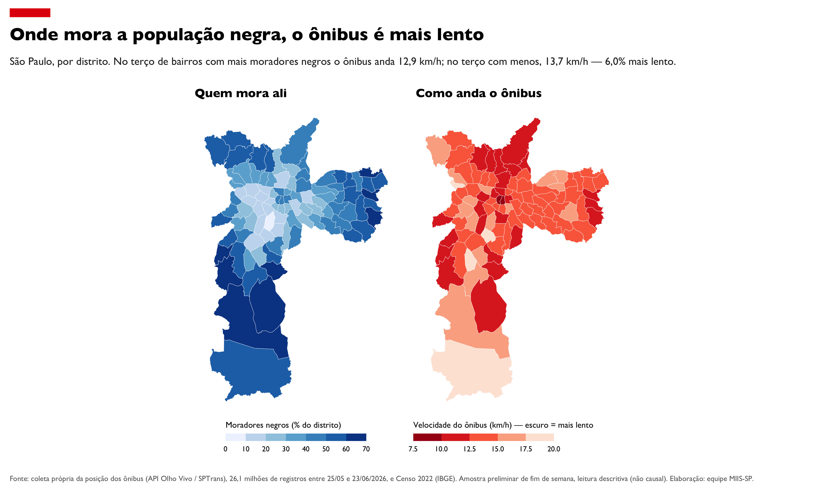
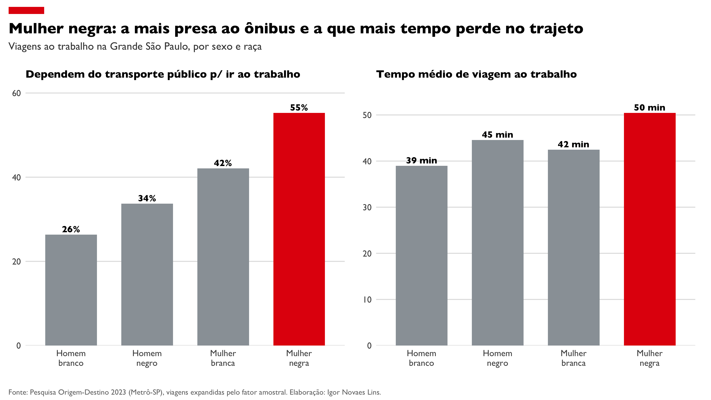

Quem a cidade faz esperar — raça, gênero, renda e o transporte público.
A partir da posição real dos ônibus, coletada por nós minuto a minuto (sistema Olho Vivo/SPTrans), cruzada com o Censo 2022 e a Pesquisa Origem-Destino 2023. Os dados crescem a cada dia; esta é uma amostra preliminar.
No terço de distritos com mais moradores negros, o ônibus anda 12,9 km/h; no terço com menos, 13,7 km/h — cerca de 6% mais lento. De 26 milhões de registros de posição que coletamos. O atraso, a espera por irregularidade do ônibus, também é maior nos bairros mais negros.

A mulher negra é a que mais depende do transporte público para ir ao trabalho — 55%, contra 26% do homem branco — e a que mais tempo perde no trajeto: 50 minutos, contra 39. O grupo mais preso ao ônibus é, justamente, o que pega o ônibus mais lento.
